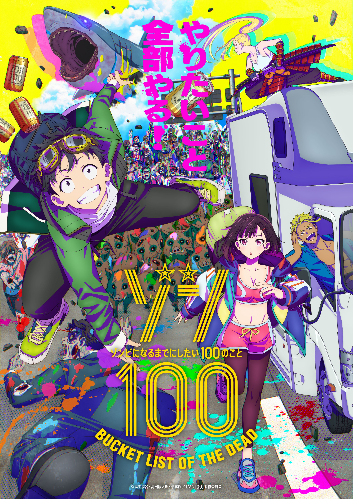

Name: Haro Aso
age: 43
Gender: Male
born: 05 january 1980
age: 43
Gender: Male
born: 05 january 1980
Studio: BUG FILMS
Manga: ongoing
anime: ongoing
Manga: ongoing
anime: ongoing
About the show

In a trash-filled apartment, 24-year-old Akira Tendou watches a zombie movie with lifeless, envious eyes. After spending three hard years at an exploitative corporation in Japan, his spirit is broken. He can't even muster the courage to confess his feelings to his beautiful co-worker Ootori. Then one morning, he stumbles upon his landlord eating lunch which happens to be another tenant. The whole city's swarming with zombies, and even though he's running for his life, Akira has never felt more alive.